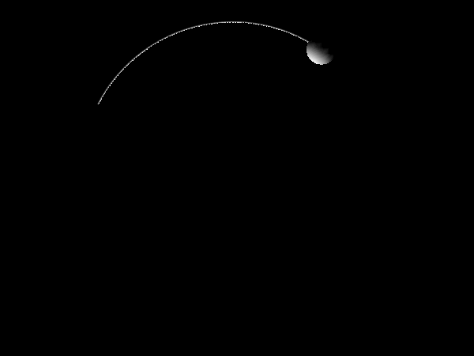
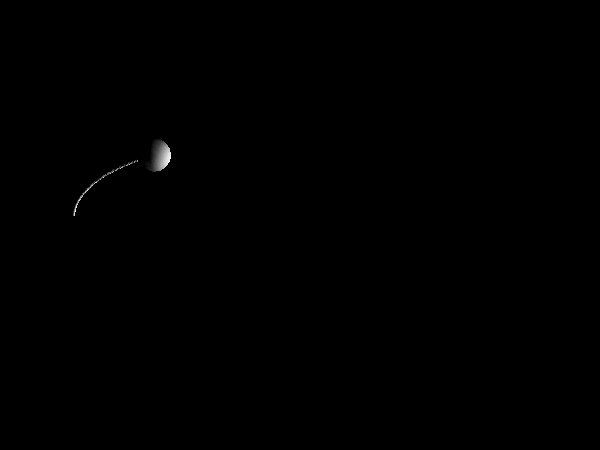
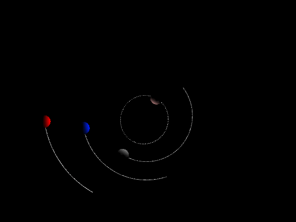
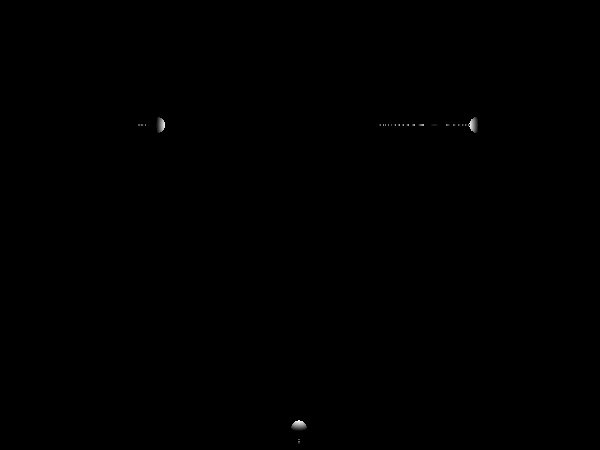
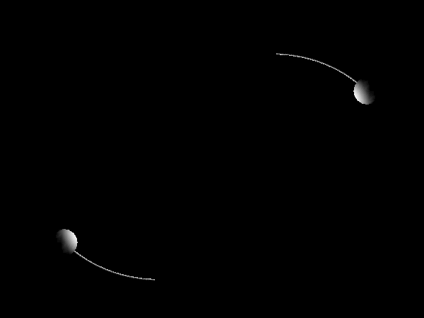

A showcase of some of the things the software can do
The simulator software was built as a part of a larger project that aimed to investigate comets. Primarily it was used to study comets in the Oort cloud where non-gravitational forces are weak. The software is essentially an N-body simulator and it can be used as such, so it's not limited to comets. The following examples try to demonstrate some of the fundamental, general functionality that the software has to offer. Hopefully for those who want to use this software the examples will be a good starting point to learn how to put together basic simulations, but full understanding can only be reached by reading the examples together with the Javadocs. For an example of a larger simulation built with this software, check out the example simulation of a star cluster.
The examples below have been stripped to just the code that makes them unique. In order to run the examples that code has to be placed inside the following template:
import com.sun.j3d.utils.applet.MainFrame;
import cometsim.*;
import cometsim.saveAndLoad.LoadResults;
import org.apache.commons.math3.exception.MaxCountExceededException;
import org.apache.commons.math3.ode.sampling.StepHandler;
import org.apache.commons.math3.ode.sampling.StepInterpolator;
import java.util.ArrayList;
import static cometsim.Constants.*;
import static java.lang.Math.*;
public class ExampleClass {
public static void main(String[] args) {
Simulator sim = new Simulator();
// Example code goes here
// The two following lines are only required if the examples is meant to be visualized.
// Examples with sim.setContinousOutput(false) in them can not be visualized.
ArrayList res = new LoadResults(sim).getResults();
new MainFrame(new Visualization(res, (int) sim.getT0(), (int) sim.getTf()), 800, 800);
}
}
 The following examples demonstrate how to put a comet on a circular orbit around the sun. The result of each piece of code is equivalent. The sun in the first example is a known body, and the comet is the unknown body whose path is simulated. In the second example the sun is also an unknown body, and the program is told to let the unknown bodies affect each other, which is not the default behavior. In the third example the sun is not represented as a body but by a force field mimicking the sun's gravitational field.
#1
sim.add(new KnownBody("Sun", sunMass, new XYZCoordinates(0,0,0,0,0,0) ));
sim.add(new UnknownBody("Comet", 0, new XYZCoordinates(1, 0, 0, 0, sqrt(G*sunMass),0)));
sim.simulate(0, 10*2*PI/sqrt(G*sunMass));
sim.add(new UnknownBody("Sun", sunMass, new XYZCoordinates(0,0,0,0,0,0) ));
sim.add(new UnknownBody("Comet", 0, new XYZCoordinates(1, 0, 0, 0, sqrt(G*sunMass),0)));
sim.setMutualGravity(true);
sim.simulate(0, 10*2*PI/sqrt(G*sunMass));
sim.addExternalForce(new ExternalForce() {
public double[] getAcceleration(double t, double[] y, UnknownBody body) {
double coeff = -G*sunMass/pow(y[0]*y[0]+y[1]*y[1]+y[2]*y[2], 1.5);
double[] a = {coeff*y[0],coeff*y[1],coeff*y[2]};
return a;
}
});
sim.add(new UnknownBody("Comet", 0, new XYZCoordinates(1, 0, 0, 0, sqrt(G * sunMass), 0)));
sim.simulate(0, 10*2*PI/sqrt(G*sunMass));
 Following the previous examples where the comet's velocity and the direction of the velocity was calculated by the user, these ones demonstrate other alternatives which make it easy to specify arbitrary orbits. The key is the replacement of XYZCoordinates which wraps the initial values of the body, with other wrappers using other coordinate systems. In this case the so called orbital elements. However, the aim here is also to demonstrate arbitrary orbits so the first example shows how to set up any orbit manually. "a" is the semimajor axis of the orbit, "e" its eccentricity and "rp" the distance of perihelion. Other elements, set to zero in these examples, such as inclination can also be specified (details can be found in the corresponding Javadoc document: ElementsTypeB). Again the result of each piece of code is equivalent.
#1
sim.add(new KnownBody("Sun", sunMass, new XYZCoordinates(0,0,0,0,0,0)));
double a = 1;
double e = 0.9;
double rp = a*(1-e);
double v0 = sqrt(G*sunMass*(2/rp-1/a));
double t = 2*PI*sqrt(pow(a,3)/(G*sunMass));
sim.add(new UnknownBody("Comet", cometMass, new XYZCoordinates(-rp,0,0,0,v0,0)));
sim.simulate(0, 10*t);
double a = 1;
double e = 0.9;
double rp = a*(1-e);
sim.add(new KnownBody("Sun", sunMass, new XYZCoordinates(0,0,0,0,0,0)));
sim.add(new UnknownBody("Comet", 0, new ElementsTypeA(a, e, 0, 0, 0, 0, sqrt(G*sunMass*(2/rp-1/a)))));
sim.simulate(0, 10*2*PI/sqrt(G*sunMass));
sim.add(new KnownBody("Sun", sunMass, new XYZCoordinates(0,0,0,0,0,0)))
sim.add(new UnknownBody("Comet", 0, new ElementsTypeB(a, e, 0, 0, 0, 0)));
sim.simulate(0, 10*2*PI/sqrt(G*sunMass));
 In the previous examples the sun has been simulated as a stationary known body and in one case as an unknown body. Planets and the sun do have known trajectories, so known bodies are the logical choice to represent them. Because the task of incorporating the planets in a simulation is so common, the software includes pre-made known bodies, which the first example below demonstrates. The second example uses the same code except those known bodies come from a different package called "fastPlanets" instead of "planets". The known bodies in "planets" solve Kepler's equation for a set of osculating elements that provide a very exact solution to the planets' positions. Since this is computationally costly, "fastPlanets" exists for cases where such precision is unnecessary. Even though all this class does is linear interpolation, simulating the planets as unknown bodies is faster still. In that case we can use the known bodies representing planets to retrieve suitable initial values, which is what the last example demonstrates.
#1
sim.add(new Sun());
sim.add(new planets.Mercury());
sim.add(new planets.Venus());
sim.add(new planets.Earth());
sim.add(new planets.Mars());
sim.add(new planets.Jupiter());
sim.add(new planets.Saturn());
sim.add(new planets.Uranus());
sim.add(new planets.Neptune());
sim.add(new UnknownBody("Comet", 0, new ElementsTypeB(1E5, 0, 0, 0, 0, 0)));
sim.simulate(0, 10*365);
sim.add(new Sun());
sim.add(new fastPlanets.Mercury());
sim.add(new fastPlanets.Venus());
sim.add(new fastPlanets.Earth());
sim.add(new fastPlanets.Mars());
sim.add(new fastPlanets.Jupiter());
sim.add(new fastPlanets.Saturn());
sim.add(new fastPlanets.Uranus());
sim.add(new fastPlanets.Neptune());
sim.add(new UnknownBody("Comet", 0, new ElementsTypeB(1E5, 0, 0, 0, 0, 0)));
sim.simulate(0, 10*365);
double[] mercury = new Mercury().getIVs();
double[] venus = new Venus().getIVs();
double[] earth = new Earth().getIVs();
double[] mars = new Mars().getIVs();
double[] jupiter = new Jupiter().getIVs();
double[] saturn = new Saturn().getIVs();
double[] uranus = new Uranus().getIVs();
double[] neptune = new Neptune().getIVs();
sim.add(new UnknownBody("Mercury", new Mercury().getMass(),
new XYZCoordinates(
mercury[0],mercury[1],mercury[2],
mercury[3],mercury[4],mercury[5]
)
)
);
sim.add(new UnknownBody("Venus", new Venus().getMass(),
new XYZCoordinates(
venus[0],venus[1],venus[2],
venus[3],venus[4],venus[5]
)
)
);
sim.add(new UnknownBody("Earth", new Earth().getMass(),
new XYZCoordinates(
earth[0],earth[1],earth[2],
earth[3],earth[4],earth[5]
)
)
);
sim.add(new UnknownBody("Mars", new Mars().getMass(),
new XYZCoordinates(
mars[0],mars[1],mars[2],
mars[3],mars[4],mars[5]
)
)
);
sim.add(new UnknownBody("Jupiter", new Jupiter().getMass(),
new XYZCoordinates(
jupiter[0],jupiter[1],jupiter[2],
jupiter[3],jupiter[4],jupiter[5]
)
)
);
sim.add(new UnknownBody("Saturn", new Saturn().getMass(),
new XYZCoordinates(
saturn[0],saturn[1],saturn[2],
saturn[3],saturn[4],saturn[5]
)
)
);
sim.add(new UnknownBody("Uranus", new Uranus().getMass(),
new XYZCoordinates(
uranus[0],uranus[1],uranus[2],
uranus[3],uranus[4],uranus[5]
)
)
);
sim.add(new UnknownBody("Neptune", new Neptune().getMass(),
new XYZCoordinates(
neptune[0],neptune[1],neptune[2],
neptune[3],neptune[4],neptune[5]
)
)
);
sim.setMutualGravity(true);
 Event handlers essentially are just methods that get called when something user-defined occurs. For example, "at t=5 print Hello World." Both the state vectors of all the unknown bodies and the time can be used to define the event. In practice you have to write a continuous function g(x,t) that will switch sign at the precise moment where the event occurs. A few event handlers come with the program, and the first two examples use such event handlers, whereas the third example uses an event handler that's been included inline for demonstrative purposes. Of course the source code for the included event handlers make great examples as well.
#1
sim.add(new KnownBody("Sun", sunMass, new XYZCoordinates(0,0,0,0,0,0) ));
sim.add(new UnknownBody("Comet 1", cometMass, new XYZCoordinates(3, 0, 0, 0, 0, 0)));
sim.add(new UnknownBody("Comet 2", cometMass, new XYZCoordinates(-2, 0, 0, 0, 0,0)));
sim.add(new UnknownBody("Comet 4", cometMass, new XYZCoordinates(0, -4, 0, 0, 0,0)));
/*
* When any of the comets come within 0.5 AU from the sun, the simulation will abruptly be terminated.
* That is what Stop(0.5) does.
*/
sim.addEventHandler(new Stop(0.5));
sim.simulate(0, 2000);
sim.add(new KnownBody("Sun", sunMass, new XYZCoordinates(0,0,0,0,0,0) ));
sim.add(new UnknownBody("Comet 1", cometMass, new XYZCoordinates(3, 0, 0, 0, 0, 0)));
sim.add(new UnknownBody("Comet 2", cometMass, new XYZCoordinates(-2, 0, 0, 0, 0,0)));
sim.add(new UnknownBody("Comet 4", cometMass, new XYZCoordinates(0, -4, 0, 0, 0,0)));
/*
* A comet that reaches the distance 1 AU from the sun gets its velocity reversed.
* In effect, then, comets in this simulation "bounce" off an imaginary unit sphere.
*/
sim.addEventHandler(new Bounce(1));
sim.simulate(0, 2000);
sim.add(new Sun());
sim.add(new Mercury());
sim.add(new Venus());
sim.add(new Earth());
sim.add(new Mars());
sim.add(new Jupiter());
sim.add(new Saturn());
sim.add(new Uranus());
sim.add(new Neptune());
//Flamsteed at t=1683-06-01=2335914.5
UnknownBody flamsteed = new UnknownBody("Flamsteed", 0,
new XYZCoordinates(
-1.060190821263480, 3.800449002838095E-02, 1.260768366372278E-02,
1.651208244240594E-02, 1.364834967389023E-03, 1.676402458915963E-02
)
);
sim.add(flamsteed);
sim.setContinuousOutput(false);
/*
* The following event handler prints the time every time the unknown body reaches perihelion.
* In this case it calculates the perihelion time of the 1683 passage of the Flamsteed comet.
*/
sim.addEventHandler(new EventHandler() {
public void init(double t0, double[] y0, double t) {
}
public double g(double t, double[] y) {
return y[0]*y[3]+y[1]*y[4]+y[2]*y[5];
}
public Action eventOccurred(double t, double[] y, boolean increasing) {
if(increasing)
System.out.println(t);
return Action.CONTINUE;
}
public void resetState(double t, double[] y) {
}
});
sim.simulate(2335914.5,2335975.5);
Data generated by the simulation can be saved and analyzed by third party software, but saving data is the concern of the next section. In this section we're concerned with analyzing data generated by the simulation as a part of the simulation with code written in Java. The main tool for this is so called step handlers. The simulation is done by integrating the equation of motions by a step method, that is, predicting the movement of bodies using the derivative of their position and then taking a "step" accordingly. Step handlers are methods that receive the updated state vector after each step, just like the g method of event handlers, and it can then do things with this data. The second example prints a comma separated list of the total energy of the system, with each value representing the energy at a new step, which by the law of conservation of energy should be the same as for all other steps.
#1
//Add unknown bodies here...
sim.addStepHandler(new DataAnalysis());
sim.simulate(0,simLength);
// Take a look at how the step handler is implemented below.
public class DataAnalysis implements StepHandler {
public void init(double t0, double[] y0, double t) {
}
public void handleStep(StepInterpolator interpolator, boolean isLast) {
if(isLast) {
double[] y = interpolator.getInterpolatedState();
int outside = 0;
for(int i=0; i 2000)
outside++;
}
//Prints the percentage of bodies that are > 2000 AU away from the sun
System.out.println(outside/(y.length/6));
}
}
}
double a = 3;
double e = 0.1;
double rp = a*(1-e);
double v0 = sqrt(G*sunMass*(2/rp-1/a));
double tp = 2*PI*sqrt(pow(a,3)/(G*sunMass));
sim.add(new UnknownBody("Star 1", sunMass, new XYZCoordinates(rp/2,0,0,0,v0/2,0)));
sim.add(new UnknownBody("Star 2", sunMass, new XYZCoordinates(-rp/2,0,0,0,-v0/2,0)));
sim.setMutualGravity(true);
sim.addStepHandler(new StepHandler() {
double en;
public void init(double t0, double[] y0, double t) {
en = 2*kinEn(y0)+potEn(y0);
}
public void handleStep(StepInterpolator interpolator, boolean isLast) throws MaxCountExceededException {
double[] y = interpolator.getInterpolatedState();
System.out.print(2*kinEn(y)-potEn(y)+", ");
}
private double kinEn(double[] y) {
double v = sqrt(y[3]*y[3]+y[4]*y[4]+y[5]*y[5]);
return sunMass*v*v/2;
}
private double potEn(double[] y) {
double deltax = y[0]-y[6];
double deltay = y[1]-y[7];
double deltaz = y[2]-y[8];
double r = sqrt(deltax*deltax+deltay*deltay+deltaz*deltaz);
return -G*sunMass*sunMass/r;
}
});
sim.simulate(0, 10*tp);
By default as many steps of the integration are remembered as is necessary to interpolate exactly between them. That is, by default you may query the result for the solution at any given time within the time range of the simulation and retrieve a value that has the same precision as the values originally calculated by the ODE solver algorithm. The downside to this is that all that information is stored in memory during the simulation, so it is not appropriate for large simulations. But if you can pull it off with continuous output turned on, which is default, you can save the continuous output to file in such a way that it can be loaded later and still be continuous. This is demonstrated in example #1, along with some methods that generates discrete data by sampling the continuous output. The other way to store results is to store nothing in memory but instead write the state vector (or a measurement like kinetic energy) to file every nth day during the simulation. This method is implemented using step handlers, and it is demonstrated in example #2. In both cases we are reusing the code for a comet in a circular orbit around the sun, just to generate data.
#1
sim.add(new KnownBody("Sun", sunMass, new XYZCoordinates(0,0,0,0,0,0) ));
sim.add(new UnknownBody("Comet", 0, new XYZCoordinates(1, 0, 0, 0, sqrt(G*sunMass),0)));
sim.simulate(0, 10*2*PI/sqrt(G*sunMass));
SaveResults saver = new SaveResults();
save.saveSerialized("UnknownBodiesContinuous",sim); //save continuous output
saver.saveText("UnknownBodies",sim); //save positions of unknown bodies
saver.saveTextKnownObjects("KnownBodies",sim); //save positions of known bodies
saver.saveMetaText("Meta",sim); //save meta information about the simulation
sim.add(new KnownBody("Sun", sunMass, new XYZCoordinates(0,0,0,0,0,0) ));
sim.add(new UnknownBody("Comet", 0, new XYZCoordinates(1, 0, 0, 0, sqrt(G*sunMass),0)));
sim.setContinuousOutput(false); //Don't waste memory
//Write the state vector to file once every thousand day
sim.addStepHandler(new WriteFileStepHandler("CircularOrbit",1000));
sim.simulate(0, 10000*2*PI/sqrt(G*sunMass));
 Continuous output can be visualized by a tool that is a part of the program. The animations on this page are but screen recordings of visualizations made with this tool. The tool can zoom in and out, change the speed of the animation and start/stop/reset it. The below example shows how to invoke the visualization tool.
#1
double a = 3;
double e = 0.1;
double rp = a*(1-e);
double v0 = sqrt(G*sunMass*(2/rp-1/a));
double tp = 2*PI*sqrt(pow(a,3)/(G*sunMass));
sim.add(new UnknownBody("Star 1", sunMass, new XYZCoordinates(rp/2,0,0,0,v0/2,0)));
sim.add(new UnknownBody("Star 2", sunMass, new XYZCoordinates(-rp/2,0,0,0,-v0/2,0)));
sim.setMutualGravity(true);
sim.simulate(0, 10*tp);
ArrayList res = new LoadResults(sim).getResults();
new MainFrame(new Visualization(res, (int) sim.getT0(), (int) sim.getTf()), 800, 800);